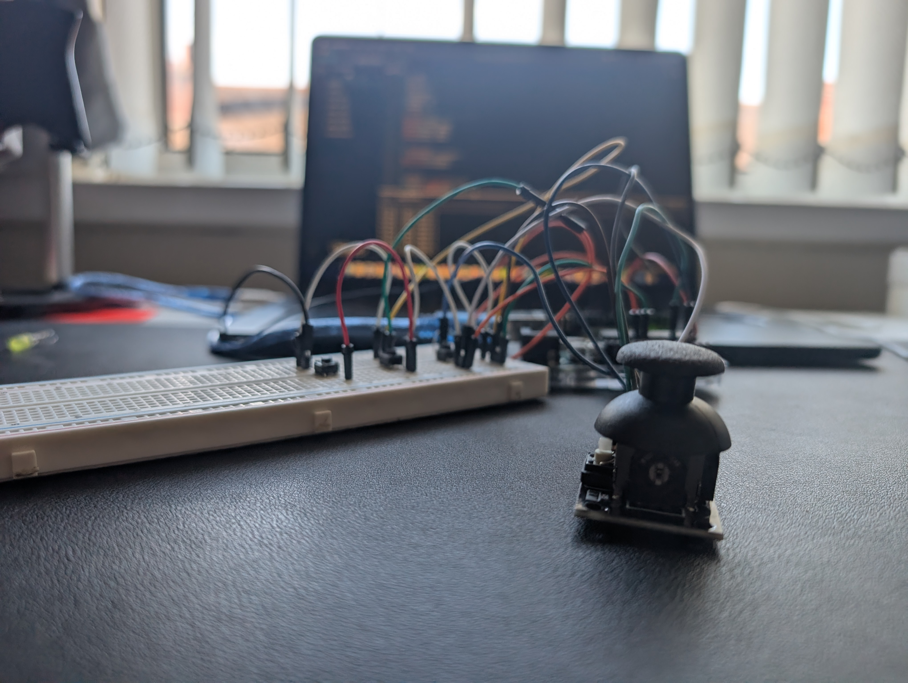

Abstract-my main goal on this project was to make a simulation of a gear system, including a brake, accelerate and most importantly a gear system
This turned out to be a great learning experience for inputting data to my micro controller, i used co-ordinates within the joystick to map my locations on the joystick for each gear, which only worked when clutch was down. This gear value would also be tracked, only allowing acceleration when you were in gear.
also i utilised the switch on the joystick to show a reverse gear
